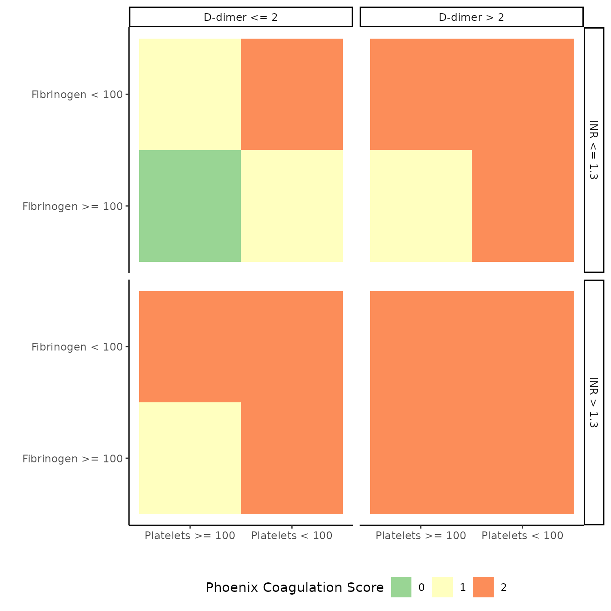

library(phoenix)
packageVersion("phoenix")
## [1] '1.0.0.9000'Details on the development of the diagnostic Phoenix Sepsis Criteria are in Sanchez-Pinto et al. (2024). This manuscript covers the data-driven and modified Delphi process leading to an international consensus for the criteria (Schlapbach et al. (2024)).
This R package provides utilities to quickly and easily apply the Phoenix Sepsis scoring rubric to your data sets.
There are two sets of criteria, the Phoenix and Phoenix 8 criteria. It was determined during the development of the criteria that a score based on four organ systems was sufficient for diagnosis of sepsis and septic shock. An extended score based on eight organ systems was reported as well.
A pediatric patient is to be diagnosed as having sepsis if:
Suspected/Confirmed infection (receipt of systemic antimicrobials and microbiological testing with in first 24 hours of hospital presentation), and
A total Phoenix Sepsis Score ≥ 2. The score is the sum of the
scores.
A patient is to be diagnosed as having septic shock if the patient meets the criteria for sepsis and has any cardiovascular dysfunction (cardiovascular score ≥ 1).
The research focused metric is the sum of the four organ dysfunction scores for Phoenix and
| Organ System | 0 Points | 1 Point | 2 Points | 3 Points |
|---|---|---|---|---|
| Respiratory (0-3 points) | ||||
| Any respiratory support | IMVa | IMV | ||
| PaO2:FiO2 | ≥ 400 | < 400 | < 200 | < 100 |
| SpO2:FiO2b | ≥ 292 | < 292 | < 220 | < 148 |
| Cardiovascular (0-6 points; sum of medications, Lactate, and MAP) | ||||
| Systemic Vasoactive Medicationsc | No medications | 1 medication | 2 or more medications | |
| Lactated (mmol/L) | < 5 | 5 ⋚ Lactate < 11 | ≥ 11 | |
| Agee (months) adjusted MAPf (mmHg) | ||||
| 0 ≤ Age < 1 | ≥ 31 | 17 ≤ MAP < 31 | < 17 | |
| 1 ≤ Age < 12 | ≥ 39 | 25 ≤ MAP < 39 | < 25 | |
| 12 ≤ Age < 24 | ≥ 44 | 31 ≤ MAP < 44 | < 31 | |
| 24 ≤ Age < 60 | ≥ 45 | 32 ≤ MAP < 45 | < 32 | |
| 60 ≤ Age < 144 | ≥ 49 | 36 ≤ MAP < 49 | < 36 | |
| 144 ≤ Age < 216 | ≥ 52 | 38 ≤ MAP < 52 | < 38 | |
| Coagulationg (0-2 points; 1 for each lab; max of 2 points) | ||||
| Platelets (1000/μL) | ≥ 100 | < 100 | ||
| INR | ≤ 1.3 | > 1.3 | ||
| D-Dimer (mg/L FEU) | ≤ 2 | > 2 | ||
| Fibrinogen (mg/dL) | ≥ 100 | < 100 | ||
| Neurologich (0-2 points) | ||||
| GCSi ≥ 11 | GCS ≤ 10 | Bilaterally fixed pupils | ||
| Endocrine (0-1 point) | ||||
| Blood Glucose (mg/dL) | 50 ≤ Blood Glucose ≤ 150 | < 50; or > 150 | ||
| Immunologic (0-1 point; point from ANC and/or ALC) | ||||
| ANC (cells/mm3) | ≥ 500 | < 500 | ||
| ALC (cells/mm3) | ≥ 1000 | < 1000 | ||
| Renal (0-1 point) | ||||
| Agee (months) adjusted Creatinine (mg/dL) | ||||
| 0 ≤ Age < 1 | < 0.8 | ≥ 0.8 | ||
| 1 ≤ Age < 12 | < 0.3 | ≥ 0.3 | ||
| 12 ≤ Age < 24 | < 0.4 | ≥ 0.4 | ||
| 24 ≤ Age < 60 | < 0.6 | ≥ 0.6 | ||
| 60 ≤ Age < 144 | < 0.7 | ≥ 0.7 | ||
| 144 ≤ Age < 216 | < 1.0 | ≥ 1.0 | ||
| Hepatic (0-1 point; point from total bilirubin and/or ALT) | ||||
| Total Bilirubin (mg/dL) | < 4 | ≥ 4 | ||
| ALT (IU/L) | ≤ 102 | > 102 |
aAbbreviations: ALC: Absolute lymphocyte count; ALT: alanine aminotransferase; ANC: Absolute neutrophil count; FEU: fibrinogen equivalent units; FiO2: fraction of inspired oxygen; GCS: Glasgow Coma Score; IMV: invasive mechanical ventilation; INR: International normalized ratio; MAP: mean arterial pressure; PaO2: arterial oxygen pressure; SpO2: pulse oximetry oxygen saturation;
bSpO2:FiO2 is only valid when SpO2 ≤ 97.
cVasoactive medications: any systemic dose of dobutamine, dopamine, epinephrine, milrinone, norepinephrine, and/or vasopressin.
dLactate can be arterial or venous. Reference range 0.5 - 2.2 mmol/L
eAge: measured in months and is not adjusted for prematurity.
fMAP - Use measured mean arterial pressure preferentially (invasive arterial if available, or non-invasive oscillometric), alternatively use the calculation diastolic + (systolic - diastolic) / 3
gCoagulation variable reference ranges: platelets, 150-450 103/μL; D-dimer, < 0.5 mg/L FEU; fibrinogen, 180-410 mg/dL. International normalized ratio reference range is based on local reference prothrombin time.
hNeurologic dysfunction scoring was pragmatically validated in both sedated and on sedated patients and those with and without IMV.
iGCS measures level of consciousness based on verbal, eye, and motor response. Values are integers from 3 to 15 with higher scores indicating better neurologic function.
jThe verbosity of this table is greater than in the tables in the original source publications.(Sanchez-Pinto et al. 2024; Schlapbach et al. 2024) The inequalities reported in this table, and the specific values reported in this table, reflect how the criteria is implemented in software whereas the source publications reported tables consistent with clinical practice. A couple notable differences. 1 cardiovascular point is reached for a lactate value of “5-10.9 mmol/L” and 2 points for lactate ≥ 11 mmol/L.1,2 There is an implication of rounding lactate to one decimal place and assessing the criteria. The software simplifies the work by considering lactate values to be a floating point value that could take on any real value and thus the logic of “5 ≤ lactate < 11” for 1 point. Additionally, for MAP, the criteria listed in this table is consistent with common clinical practice of interpreting MAP as integer values. The criteria listed in this table is used with the assumption that MAP values are floating point values.
Details on the developed of the criteria are described in Sanchez-Pinto et al. (2024) and Schlapbach et al. (2024) and end users are encouraged to review these papers. A couple quick notes about the data and use in general. Some specific details will be provided in each of the sections for each organ system.
Missing data = 0 points: During the development of the Phoenix criteria missing data was mapped to zero points. This was done as it was reasonable to assume that for some labs and metrics, missing data could indicate that there was no concern and the testing was not order. Further, the Phoenix criteria was developed to be useful in both high, medium, and low resource settings where some labs and values might be uncommon or impossible to get. As such, we encourage end users of this package to do the same - missing values are missing and should not be imputed. The Phoenix Criteria is valid on “known data.”
Worst in first 24 hours: The score was developed on the worse measured value during the first 24 hours of an hospital encounter. For example, consider the following patient encounter and organ dysfunction scores:
| encounter time | resp | card | coag | neuro | total |
|---|---|---|---|---|---|
| 0 | 1 | 0 | 0 | 1 | 2 |
| 120 | 0 | 1 | 0 | 1 | 2 |
| 720 | 0 | 0 | 0 | 1 | 1 |
This patient never had a total score exceeding 2 during the first 720 minutes of the encounter. However, if we took the max score for the four components and summed them for the total then the resulting score would be 3.
The development of the Phoenix Criteria was based on the worse total score observed during the first 24 hours of an encounter. The correct signal score for the patient in the above example is 2, not 3. Please keep this in mind when you are preparing your data sets.
Age Restrictions: Age measurements are not adjusted for prematurity. The Phoenix criteria was developed on non-birth hospitalizations (implication is age > 0), children when gestational age > 37 weeks; and those aged ≤ 216 months (18 years).
There are functions to apply the Phoenix criteria to a data set for each of the organ systems and wrappers for full Phoenix and Phoenix-8 scores.
Inputs for the organ dysfunction scoring functions are expected to be
numeric vectors and to have a common length or a length of 1.
For example, the respiratory score requires four inputs. The lengths of
the inputs could be c(1, 10, 10, 10) indicating that the
first input is constant for all other values. An input of
c(2, 10, 10, 10) will result in an error. If you wish to
‘recycle’ an input of length greater than 1 and less than the max length
of another, then wrap the shorter inputs in rep() for
clarity.
In the following subsections example use of the functions require the
use of the provided example synthetic dataset sepsis. This
data set has 20 rows and 27 variables. See `?(sepsis)` for
more details.
pf_ratio is the ratio of PaO2 (partial
pressure or oxygen in arterial blood, units of mmHg) to FiO2
(fraction of inspiratory oxygen, values expected to be between 0.21 for
room air, to 1.00). Gathering the PaO2 is an invasive
procedure.
sf_ratio The SpO2 (pulse oximetry) to
FiO2 ratio is a non-invasive surrogate for the PF ratio.
Important note: during the development of the Phoenix criteria SF ratios
were only valid to consider if the SpO2 is ≤ 97.
imv Invasive mechanical ventilation. This is an
integer valued indicator variable: 0 = not intubated; 1 =
intubated.
other_respiratory_support Any oxygen support, e.g.,
high-flow, non-invasive positive pressure, or IMV.
The function phoenix_respiratory will return an integer
vector.
A patient with a nasal cannula at 5 L/min (approximate FiO2 of 0.4) and SpO2 of 87:
phoenix_respiratory(
sf_ratio = 87 / 0.40,
other_respiratory_support = 1)
## [1] 1Notice that the pf_ratio and imv arguments
have been omitted. When an input is missing it is assumed to be
NA.
When your data is in a data.frame then:
DF <- read.table(sep = "|", header = TRUE, text =
"
pfr | sfr | imv | o2
| 438 | |
| 175 | | 1
| 175 | | 1
186 | | 1 | 0
300 | 277 | 0 | 1
| | |
")
DF$resp_score <- phoenix_respiratory(pfr, sfr, imv, o2, DF)
DF
## pfr sfr imv o2 resp_score
## 1 NA 438 NA NA 0
## 2 NA 175 NA 1 1
## 3 NA 175 NA 1 1
## 4 186 NA 1 0 2
## 5 300 277 0 1 1
## 6 NA NA NA NA 0Another example using the provided example data set
sepsis. Here we have to construct a few variables as we
only have information on FiO2, PaO2,
SpO2, and invasive mechanical ventilation.
resp_example <- sepsis[c("pid", "fio2", "pao2", "spo2", "vent")]Implied in this data is other respiratory support when FiO2 is greater than 0.21, the approximate fraction of oxygen in the atmosphere.
resp_example$score <-
phoenix_respiratory(
pf_ratio = pao2 / fio2,
sf_ratio = ifelse(spo2 <= 97, spo2 / fio2, NA_real_),
imv = vent,
other_respiratory_support = as.integer(fio2 > 0.21),
data = sepsis
)
resp_example| pid | fio2 | pao2 | spo2 | vent | score |
|---|---|---|---|---|---|
| 1 | 0.75 | NA | 99 | 1 | 0 |
| 2 | 0.75 | 75.3 | 95 | 1 | 3 |
| 3 | 1.00 | 49.5 | NA | 1 | 3 |
| 4 | NA | NA | NA | 0 | 0 |
| 5 | NA | 38.7 | 95 | 0 | 0 |
| 6 | 0.60 | 69.9 | 88 | 1 | 3 |
| 7 | 0.50 | NA | 31 | 1 | 3 |
| 8 | 0.30 | NA | 97 | 1 | 0 |
| 9 | 0.65 | 51.0 | 82 | 1 | 3 |
| 10 | 0.80 | NA | 76 | 1 | 3 |
| 11 | 0.65 | 54.0 | NA | 1 | 3 |
| 12 | 0.35 | NA | 91 | 0 | 1 |
| 13 | 0.30 | NA | 97 | 1 | 0 |
| 14 | 0.50 | NA | 89 | 1 | 2 |
| 15 | 1.00 | 42.5 | 45 | 1 | 3 |
| 16 | NA | NA | NA | 0 | 0 |
| 17 | 0.45 | 61.3 | 97 | 1 | 2 |
| 18 | 1.00 | 64.1 | 92 | 1 | 3 |
| 19 | 0.50 | NA | 97 | 1 | 2 |
| 20 | NA | NA | NA | 0 | 0 |
vasoactives is an integer count of the number of
systemic vasoactive medications the patient is currently receiving.
During development of the Phoenix criteria it was found that just the
count of the medications was sufficient to be useful, the dosage was not
needed. There were six medications considered, dobutamine, dopamine,
epinephrine, milrinone, norepinephrine, and vasopressin. Again, it is
systemic use of the medication that is important. For example, an
injection of epinephrine to halt an allergic reaction would not count,
whereas having an epinephrine drip to treat hypotension or bradycardia
would count.
lactate level of lactate in the blood, measured in
mmol/L
age in months
map mean arterial pressure (mmHg). During
development of the Phoenix criteria, map, and blood pressure values in
general, obtained from arterial measures were used preferentially over
values obtained from cuffs. Reported values were used preferentially
over calculated values. If you need to calculate the map use DBP + (1/3)
* (SBP - DBP) where DBP is diastolic blood pressure (mmHg) and SBP is
systemic blood pressure (mmHg).
card_example <-
sepsis[c("pid", "dobutamine", "dopamine", "epinephrine", "milrinone", "norepinephrine", "vasopressin", "lactate", "dbp", "sbp", "age")]
card_example$score <-
phoenix_cardiovascular(
vasoactives = dobutamine + dopamine + epinephrine + milrinone + norepinephrine + vasopressin,
lactate = lactate,
age = age,
map = dbp + (sbp - dbp)/3,
data = sepsis)
card_example| pid | dobutamine | dopamine | epinephrine | milrinone | norepinephrine | vasopressin | lactate | dbp | sbp | age | score |
|---|---|---|---|---|---|---|---|---|---|---|---|
| 1 | 1 | 1 | 1 | 1 | 0 | 0 | NA | 40 | 53 | 0.06 | 2 |
| 2 | 0 | 1 | 0 | 0 | 1 | 0 | 3.32 | 60 | 90 | 201.70 | 2 |
| 3 | 0 | 1 | 0 | 0 | 0 | 0 | 1.00 | 87 | 233 | 20.80 | 1 |
| 4 | 0 | 0 | 0 | 0 | 0 | 0 | NA | 57 | 104 | 192.50 | 0 |
| 5 | 0 | 0 | 0 | 0 | 0 | 0 | NA | 57 | 101 | 214.40 | 0 |
| 6 | 0 | 1 | 0 | 0 | 0 | 0 | 1.15 | 79 | 119 | 101.20 | 1 |
| 7 | 0 | 0 | 1 | 1 | 0 | 1 | NA | 11 | 14 | 150.70 | 4 |
| 8 | 0 | 0 | 0 | 0 | 0 | 0 | NA | 66 | 112 | 159.70 | 0 |
| 9 | 0 | 0 | 1 | 1 | 1 | 1 | 8.10 | 51 | 117 | 176.10 | 3 |
| 10 | 0 | 0 | 0 | 0 | 0 | 0 | NA | 58 | 84 | 6.60 | 0 |
| 11 | 0 | 1 | 1 | 0 | 0 | 0 | NA | 39 | 51 | 36.70 | 3 |
| 12 | 0 | 0 | 0 | 0 | 0 | 0 | NA | 63 | 132 | 37.40 | 0 |
| 13 | 0 | 0 | 0 | 0 | 0 | 0 | NA | 55 | 93 | 0.12 | 0 |
| 14 | 0 | 0 | 1 | 1 | 0 | 0 | NA | 54 | 106 | 62.30 | 2 |
| 15 | 0 | 1 | 1 | 1 | 0 | 1 | NA | 25 | 37 | 10.60 | 3 |
| 16 | 1 | 1 | 1 | 1 | 1 | 0 | 0.90 | 55 | 82 | 0.89 | 2 |
| 17 | 0 | 1 | 1 | 1 | 0 | 1 | 0.60 | 43 | 79 | 10.70 | 2 |
| 18 | 0 | 1 | 1 | 1 | 0 | 1 | NA | 53 | 75 | 10.60 | 2 |
| 19 | 0 | 0 | 1 | 1 | 0 | 0 | NA | 44 | 70 | 0.17 | 2 |
| 20 | 0 | 0 | 1 | 0 | 0 | 0 | 2.20 | 77 | 99 | 71.90 | 1 |
platelets in units of 1,000/μL
inr international normalized ratio; a metric for
time require for blood to clot.
d_dimer in units of mg/L FEU
fibrinogen in units of mg/dL
While there are four components to this score, the maximum number of points assigned is 2.

coag_example <- sepsis[c("pid", "platelets", "inr", "d_dimer", "fibrinogen")]
coag_example$score <-
phoenix_coagulation(platelets, inr, d_dimer, fibrinogen, data = sepsis)
coag_example| pid | platelets | inr | d_dimer | fibrinogen | score |
|---|---|---|---|---|---|
| 1 | 199 | 1.460 | NA | 180 | 1 |
| 2 | 243 | 1.180 | 2.45 | 311 | 1 |
| 3 | 49 | 1.600 | NA | 309 | 2 |
| 4 | NA | 1.300 | 2.82 | 220 | 1 |
| 5 | 393 | NA | NA | NA | 0 |
| 6 | 86 | 1.230 | 4.72 | 270 | 2 |
| 7 | 65 | 3.100 | NA | 94 | 2 |
| 8 | 215 | 0.970 | 5.15 | 489 | 1 |
| 9 | 101 | 1.080 | 7.71 | 456 | 1 |
| 10 | 292 | NA | NA | NA | 0 |
| 11 | NA | 3.000 | NA | NA | 1 |
| 12 | NA | NA | NA | NA | 0 |
| 13 | NA | NA | NA | NA | 0 |
| 14 | 24 | 1.146 | NA | NA | 1 |
| 15 | 82 | 1.424 | NA | 76 | 2 |
| 16 | 355 | 1.230 | 4.77 | 174 | 1 |
| 17 | 166 | 1.000 | 4.10 | 236 | 1 |
| 18 | 80 | 1.641 | NA | 76 | 2 |
| 19 | 190 | NA | NA | NA | 0 |
| 20 | 78 | 1.160 | 0.75 | 201 | 1 |
gcs an integer vector for the (total) Glasgow Comma
Score. The total score is the sum of the eye, verbal, and motor
scores.
fixed_pupils an integer vector of zeros and ones. 1
= bilaterally fixed pupils, 0 otherwise.
neuro_example <- sepsis[c("pid", "gcs_total", "pupil")]
neuro_example$score <-
phoenix_neurologic(gcs = gcs_total, fixed_pupils = as.integer(pupil == "both-fixed"), data = sepsis)
neuro_example| pid | gcs_total | pupil | score |
|---|---|---|---|
| 1 | NA | 0 | |
| 2 | 5 | both-reactive | 1 |
| 3 | 15 | both-reactive | 0 |
| 4 | 14 | 0 | |
| 5 | NA | 0 | |
| 6 | 3 | both-reactive | 1 |
| 7 | NA | 0 | |
| 8 | 15 | both-reactive | 0 |
| 9 | 3 | both-reactive | 1 |
| 10 | 3 | both-reactive | 1 |
| 11 | 3 | both-fixed | 2 |
| 12 | NA | 0 | |
| 13 | NA | 0 | |
| 14 | NA | 0 | |
| 15 | NA | 0 | |
| 16 | NA | 0 | |
| 17 | 11 | both-reactive | 0 |
| 18 | NA | 0 | |
| 19 | NA | 0 | |
| 20 | NA | 0 |
The endocrine criteria is only applicable to the extended Phoenix-8 scoring.
endo_example <- sepsis[c("pid", "glucose")]
endo_example$score <- phoenix_endocrine(glucose, data = sepsis)
endo_example| pid | glucose | score |
|---|---|---|
| 1 | NA | 0 |
| 2 | 110.0 | 0 |
| 3 | 93.0 | 0 |
| 4 | 110.0 | 0 |
| 5 | NA | 0 |
| 6 | 147.0 | 0 |
| 7 | NA | 0 |
| 8 | 100.0 | 0 |
| 9 | 264.0 | 1 |
| 10 | 93.0 | 0 |
| 11 | 341.0 | 1 |
| 12 | NA | 0 |
| 13 | NA | 0 |
| 14 | NA | 0 |
| 15 | NA | 0 |
| 16 | 82.4 | 0 |
| 17 | 130.0 | 0 |
| 18 | NA | 0 |
| 19 | 103.0 | 0 |
| 20 | 159.8 | 1 |
The immunologic score is only applicable to the extended Phoenix-8 scoring.
anc in units of 1,000 cells per cubic millimeteralc in units of 1,000 cells per cubic millimeter
immu_example <- sepsis[c("pid", "anc", "alc")]
immu_example$score <- phoenix_immunologic(anc, alc, sepsis)
immu_example| pid | anc | alc | score |
|---|---|---|---|
| 1 | NA | NA | 0 |
| 2 | 14.220 | 2.220 | 1 |
| 3 | 2.210 | 0.190 | 1 |
| 4 | 3.184 | 0.645 | 1 |
| 5 | NA | NA | 0 |
| 6 | 20.200 | 0.240 | 1 |
| 7 | NA | NA | 0 |
| 8 | 3.760 | 1.550 | 1 |
| 9 | 8.770 | 3.600 | 1 |
| 10 | 9.084 | 4.617 | 1 |
| 11 | NA | NA | 0 |
| 12 | NA | NA | 0 |
| 13 | NA | NA | 0 |
| 14 | NA | NA | 0 |
| 15 | NA | NA | 0 |
| 16 | 4.720 | 4.300 | 1 |
| 17 | 9.380 | 1.310 | 1 |
| 18 | NA | NA | 0 |
| 19 | 12.570 | 2.810 | 1 |
| 20 | 3.410 | 2.850 | 1 |
The renal score is only applicable to the extended Phoenix-8 scoring.
renal_example <- sepsis[c("creatinine", "age")]
renal_example$score <- phoenix_renal(creatinine, age, sepsis)
renal_example| creatinine | age | score |
|---|---|---|
| 1.030 | 0.06 | 1 |
| 0.510 | 201.70 | 0 |
| 0.330 | 20.80 | 0 |
| 0.310 | 192.50 | 0 |
| 0.520 | 214.40 | 0 |
| 0.770 | 101.20 | 1 |
| 1.470 | 150.70 | 1 |
| 0.580 | 159.70 | 0 |
| 1.230 | 176.10 | 1 |
| 0.180 | 6.60 | 0 |
| 0.870 | 36.70 | 1 |
| NA | 37.40 | 0 |
| NA | 0.12 | 0 |
| 0.120 | 62.30 | 0 |
| 1.300 | 10.60 | 1 |
| 0.418 | 0.89 | 0 |
| 0.290 | 10.70 | 0 |
| 1.100 | 10.60 | 1 |
| 1.200 | 0.17 | 1 |
| 0.418 | 71.90 | 0 |
The hepatic score is only applicable to the extended Phoenix-8 scoring.
hep_example <- sepsis[c("pid", "bilirubin", "alt")]
hep_example$score <- phoenix_hepatic(bilirubin, alt, sepsis)
hep_example| pid | bilirubin | alt | score |
|---|---|---|---|
| 1 | NA | 36 | 0 |
| 2 | 0.200 | 32 | 0 |
| 3 | 0.800 | 182 | 1 |
| 4 | 8.500 | 21 | 1 |
| 5 | NA | NA | 0 |
| 6 | 1.200 | 15 | 0 |
| 7 | 1.700 | 3664 | 1 |
| 8 | 0.500 | 50 | 0 |
| 9 | 21.100 | 151 | 1 |
| 10 | NA | NA | 0 |
| 11 | 0.180 | NA | 0 |
| 12 | NA | NA | 0 |
| 13 | NA | NA | 0 |
| 14 | 3.300 | 60 | 0 |
| 15 | 1.300 | 1792 | 1 |
| 16 | 1.579 | 15 | 0 |
| 17 | 0.600 | 41 | 0 |
| 18 | 1.300 | 1790 | 1 |
| 19 | NA | NA | 0 |
| 20 | 0.363 | 22 | 0 |
The phoenix function is a wrapper around
phoenix_respiratory, phoenix_cardiovascular,
phoenix_coagulation, and phoenix_neurologic.
Where the individual component scoring functions return integer vectors,
phoenix returns a data.frame with a column for
each of the component organ dysfunction scores, a total score, and two
indicator columns, one for sepsis (total score ≥ 2) and another for
septic shock (total score ≥ 2 and cardiovascular dysfunction ≥ 1).
The range of Phoenix Sepsis scores is from 0 to 13.
phoenix_scores <-
phoenix(
# respiratory
pf_ratio = pao2 / fio2,
sf_ratio = ifelse(spo2 <= 97, spo2 / fio2, NA_real_),
imv = vent,
other_respiratory_support = as.integer(fio2 > 0.21),
# cardiovascular
vasoactives = dobutamine + dopamine + epinephrine + milrinone + norepinephrine + vasopressin,
lactate = lactate,
age = age,
map = dbp + (sbp - dbp)/3,
# coagulation
platelets = platelets,
inr = inr,
d_dimer = d_dimer,
fibrinogen = fibrinogen,
# neurologic
gcs = gcs_total,
fixed_pupils = as.integer(pupil == "both-fixed"),
data = sepsis
)
str(phoenix_scores)
## 'data.frame': 20 obs. of 7 variables:
## $ phoenix_respiratory_score : int 0 3 3 0 0 3 3 0 3 3 ...
## $ phoenix_cardiovascular_score: int 2 2 1 0 0 1 4 0 3 0 ...
## $ phoenix_coagulation_score : int 1 1 2 1 0 2 2 1 1 0 ...
## $ phoenix_neurologic_score : int 0 1 0 0 0 1 0 0 1 1 ...
## $ phoenix_sepsis_score : int 3 7 6 1 0 7 9 1 8 4 ...
## $ phoenix_sepsis : int 1 1 1 0 0 1 1 0 1 1 ...
## $ phoenix_septic_shock : int 1 1 1 0 0 1 1 0 1 0 ...The results as a easy to read table:
| phoenix respiratory score | phoenix cardiovascular score | phoenix coagulation score | phoenix neurologic score | phoenix sepsis score | phoenix sepsis | phoenix septic shock |
|---|---|---|---|---|---|---|
| 0 | 2 | 1 | 0 | 3 | 1 | 1 |
| 3 | 2 | 1 | 1 | 7 | 1 | 1 |
| 3 | 1 | 2 | 0 | 6 | 1 | 1 |
| 0 | 0 | 1 | 0 | 1 | 0 | 0 |
| 0 | 0 | 0 | 0 | 0 | 0 | 0 |
| 3 | 1 | 2 | 1 | 7 | 1 | 1 |
| 3 | 4 | 2 | 0 | 9 | 1 | 1 |
| 0 | 0 | 1 | 0 | 1 | 0 | 0 |
| 3 | 3 | 1 | 1 | 8 | 1 | 1 |
| 3 | 0 | 0 | 1 | 4 | 1 | 0 |
| 3 | 3 | 1 | 2 | 9 | 1 | 1 |
| 1 | 0 | 0 | 0 | 1 | 0 | 0 |
| 0 | 0 | 0 | 0 | 0 | 0 | 0 |
| 2 | 2 | 1 | 0 | 5 | 1 | 1 |
| 3 | 3 | 2 | 0 | 8 | 1 | 1 |
| 0 | 2 | 1 | 0 | 3 | 1 | 1 |
| 2 | 2 | 1 | 0 | 5 | 1 | 1 |
| 3 | 2 | 2 | 0 | 7 | 1 | 1 |
| 2 | 2 | 0 | 0 | 4 | 1 | 1 |
| 0 | 1 | 1 | 0 | 2 | 1 | 1 |
phoenix8 returns a data.frame with all the
columns that phoenix returns, with the addition of columns
for the endocrine, immunologic, renal, hepatic, and Phoenix-8 total
score.
All the same inputs as the individual organ dysfunction scoring
functions. The one minor caveat is that age is used in the
cardiovascular and the renal scores and need only be provided once when
calling phoenix8.
phoenix8_scores <-
phoenix8(
# respiratory
pf_ratio = pao2 / fio2,
sf_ratio = ifelse(spo2 <= 97, spo2 / fio2, NA_real_),
imv = vent,
other_respiratory_support = as.integer(fio2 > 0.21),
# cardiovascular
vasoactives = dobutamine + dopamine + epinephrine + milrinone + norepinephrine + vasopressin,
lactate = lactate,
age = age, # Also used in the renal assessment.
map = dbp + (sbp - dbp)/3,
# coagulation
platelets = platelets,
inr = inr,
d_dimer = d_dimer,
fibrinogen = fibrinogen,
# neurologic
gcs = gcs_total,
fixed_pupils = as.integer(pupil == "both-fixed"),
# endocrine
glucose = glucose,
# immunologic
anc = anc,
alc = alc,
# renal
creatinine = creatinine,
# no need to specify age again
# hepatic
bilirubin = bilirubin,
alt = alt,
data = sepsis
)
str(phoenix8_scores)
## 'data.frame': 20 obs. of 12 variables:
## $ phoenix_respiratory_score : int 0 3 3 0 0 3 3 0 3 3 ...
## $ phoenix_cardiovascular_score: int 2 2 1 0 0 1 4 0 3 0 ...
## $ phoenix_coagulation_score : int 1 1 2 1 0 2 2 1 1 0 ...
## $ phoenix_neurologic_score : int 0 1 0 0 0 1 0 0 1 1 ...
## $ phoenix_sepsis_score : int 3 7 6 1 0 7 9 1 8 4 ...
## $ phoenix_sepsis : int 1 1 1 0 0 1 1 0 1 1 ...
## $ phoenix_septic_shock : int 1 1 1 0 0 1 1 0 1 0 ...
## $ phoenix_endocrine_score : int 0 0 0 0 0 0 0 0 1 0 ...
## $ phoenix_immunologic_score : int 0 1 1 1 0 1 0 1 1 1 ...
## $ phoenix_renal_score : int 1 0 0 0 0 1 1 0 1 0 ...
## $ phoenix_hepatic_score : int 0 0 1 1 0 0 1 0 1 0 ...
## $ phoenix8_sepsis_score : int 4 8 8 3 0 9 11 2 12 5 ...The results as a easy to read table:
| phoenix respiratory score | phoenix cardiovascular score | phoenix coagulation score | phoenix neurologic score | phoenix sepsis score | phoenix sepsis | phoenix septic shock | phoenix endocrine score | phoenix immunologic score | phoenix renal score | phoenix hepatic score | phoenix8 sepsis score |
|---|---|---|---|---|---|---|---|---|---|---|---|
| 0 | 2 | 1 | 0 | 3 | 1 | 1 | 0 | 0 | 1 | 0 | 4 |
| 3 | 2 | 1 | 1 | 7 | 1 | 1 | 0 | 1 | 0 | 0 | 8 |
| 3 | 1 | 2 | 0 | 6 | 1 | 1 | 0 | 1 | 0 | 1 | 8 |
| 0 | 0 | 1 | 0 | 1 | 0 | 0 | 0 | 1 | 0 | 1 | 3 |
| 0 | 0 | 0 | 0 | 0 | 0 | 0 | 0 | 0 | 0 | 0 | 0 |
| 3 | 1 | 2 | 1 | 7 | 1 | 1 | 0 | 1 | 1 | 0 | 9 |
| 3 | 4 | 2 | 0 | 9 | 1 | 1 | 0 | 0 | 1 | 1 | 11 |
| 0 | 0 | 1 | 0 | 1 | 0 | 0 | 0 | 1 | 0 | 0 | 2 |
| 3 | 3 | 1 | 1 | 8 | 1 | 1 | 1 | 1 | 1 | 1 | 12 |
| 3 | 0 | 0 | 1 | 4 | 1 | 0 | 0 | 1 | 0 | 0 | 5 |
| 3 | 3 | 1 | 2 | 9 | 1 | 1 | 1 | 0 | 1 | 0 | 11 |
| 1 | 0 | 0 | 0 | 1 | 0 | 0 | 0 | 0 | 0 | 0 | 1 |
| 0 | 0 | 0 | 0 | 0 | 0 | 0 | 0 | 0 | 0 | 0 | 0 |
| 2 | 2 | 1 | 0 | 5 | 1 | 1 | 0 | 0 | 0 | 0 | 5 |
| 3 | 3 | 2 | 0 | 8 | 1 | 1 | 0 | 0 | 1 | 1 | 10 |
| 0 | 2 | 1 | 0 | 3 | 1 | 1 | 0 | 1 | 0 | 0 | 4 |
| 2 | 2 | 1 | 0 | 5 | 1 | 1 | 0 | 1 | 0 | 0 | 6 |
| 3 | 2 | 2 | 0 | 7 | 1 | 1 | 0 | 0 | 1 | 1 | 9 |
| 2 | 2 | 0 | 0 | 4 | 1 | 1 | 0 | 1 | 1 | 0 | 6 |
| 0 | 1 | 1 | 0 | 2 | 1 | 1 | 1 | 1 | 0 | 0 | 4 |
These are taken from the supplemental material of Sanchez-Pinto et al. (2024)
A previously healthy 3-year-old girl presents to an emergency department in Lima, Peru, with a temperature of 39°C, tachycardia, and irritability. Blood pressure with an oscillometric device is 67/32 mmHg (mean arterial pressure of 43 mmHg). She is given fluid resuscitation per local best practice guidelines, is started on broad spectrum antibiotics, and blood and urine cultures are sent. After an hour, she becomes hypotensive again and she is started on a norepinephrine drip. A complete blood count reveals leukocytosis, mild anemia, and a platelet count of 95 K/μL.
Phoenix Sepsis Score:
Phoenix Sepsis Criteria: The patient has suspected infection, ≥ 2 points of the Phoenix Sepsis Score, and ≥1 cardiovascular points, so she meets criteria for septic shock.
phoenix(
vasoactives = 1, # norepinephrine drip
map = 32 + (67 - 32) / 3, # 43.667 mmHg
platelets = 95,
gcs = 14, # irritability
age = 3 * 12 # expected input for age is in months
)
## phoenix_respiratory_score phoenix_cardiovascular_score
## 1 0 2
## phoenix_coagulation_score phoenix_neurologic_score phoenix_sepsis_score
## 1 1 0 3
## phoenix_sepsis phoenix_septic_shock
## 1 1 1A 6-year-old boy with a history of prematurity presents with respiratory distress to his pediatrician’s office in Tucson, Arizona. He is noted to have a temperature of 38.7°C, tachypnea, crackles in the left lower quadrant on chest auscultation, and an oxygen saturation of 89% on room air. He is started on supplemental oxygen and is transported to the local emergency department via ambulance. In the emergency department, a chest X-ray shows a consolidation in the left lower lobe and hazy bilateral lung opacities, so he is started on antibiotics for a suspected bacterial pneumonia. His respiratory status worsens, and he is started on non-invasive positive pressure ventilation. While awaiting to be admitted, his level of consciousness deteriorates rapidly: with nailbed pressure he only opens his eyes briefly, moans in pain, and withdraws his hand (Glasgow Coma Scale: 2 for eye response + 2 for verbal response + 4 for motor response = 8). He is intubated using rapid sequence induction and placed on a conventional ventilator. During this time, his lowest mean arterial pressure using a non-invasive oscillometric device is 52 mmHg and he receives a fluid bolus. He is then transferred to the pediatric intensive care unit where he requires a high positive end expiratory pressure and an FiO2 of 0.45 to achieve an oxygen saturation of 92% (S/F ratio: 204). Complete blood count and lactate level reveal a platelet count of 120 K/μL and a serum lactate of 2.9 mmol/L. Given his platelet count below the normal reference range, a coagulation panel is sent, which reveals an INR of 1.7, a D-Dimer of 4.4 mg/L, and a fibrinogen of 120 mg/dL.
Phoenix Sepsis Score:
Phoenix Sepsis Criteria: The patient has a suspected infection, ≥2 points of the Phoenix Sepsis Score, and 0 cardiovascular points, so he meets criteria for sepsis.
phoenix(
gcs = 2 + 2 + 4, # eye + verbal + motor
map = 52,
imv = 1,
sf_ratio = 92 / 0.45,
platelets = 120,
lactate = 2.9,
inr = 1.7,
d_dimer = 4.4,
fibrinogen = 120)
## phoenix_respiratory_score phoenix_cardiovascular_score
## 1 2 0
## phoenix_coagulation_score phoenix_neurologic_score phoenix_sepsis_score
## 1 2 1 5
## phoenix_sepsis phoenix_septic_shock
## 1 1 0